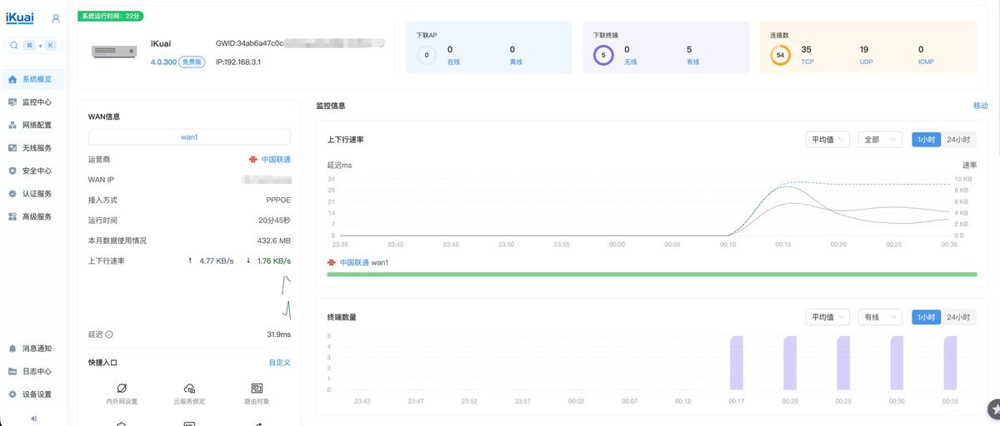
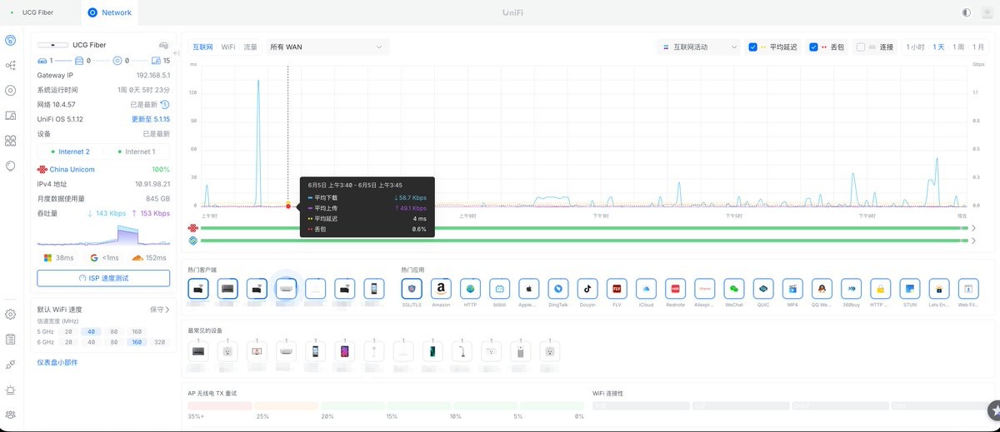

奶昔🥤
@realNyarime
我司的产品咋有种UCG Fiber的感觉，全新的iKuai OS 4.0重构了前端，昨天也把云平台迁移到全新的ICC
有玩软路由也可以选择爱快，简单又简单好配，企业版功能的License在做了，预计过阵子就会上
解决官方硬件性能不足，免费版固件功能少的问题，可以期待一波
目前插件只做了Docker（无特权模式），唯一的痛点就是Docker源抓取太慢。原生插件还在探讨，应该会在原生插件（二进制）开放前提供root权限，例如使用ShellClash，在不影响官方收费功能的前提下开放

